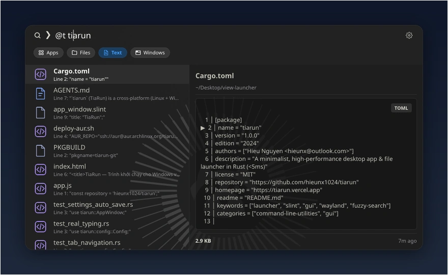
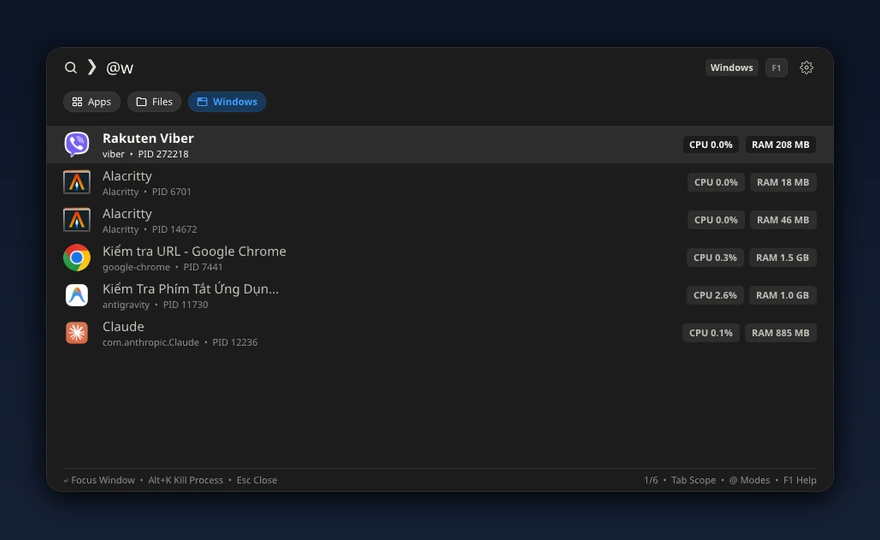
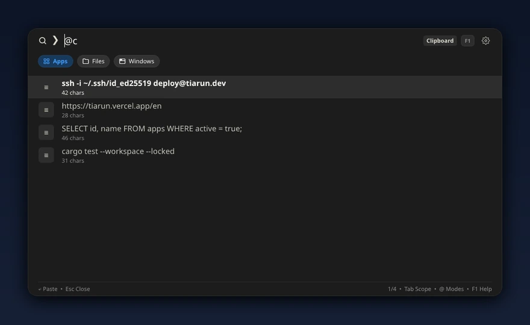
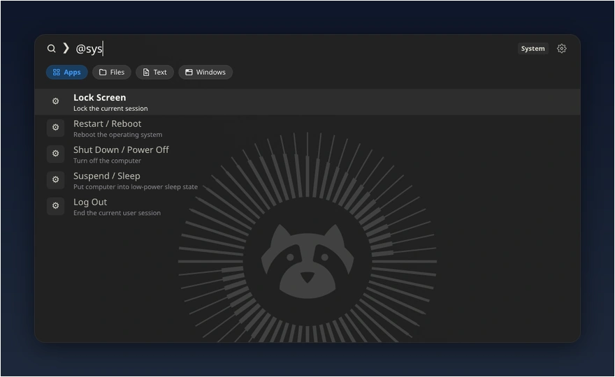

Windows
Bộ cài Windows
Chạy bộ cài rồi mở TiaRun từ menu Start.
Bản portable
Giải nén rồi chạy tiarun.exe.
Tìm tệp tiếng Việt không dấu, xem trước nội dung và tính toán ngay trong thanh lệnh TiaRun.


firefoxGõ tên ứng dụng rồi nhấn Enter để mở.

@f Cargo.tomlGõ tên tệp để tìm và xem trước. Với tên tiếng Việt, gõ @f ke hoach để tìm “Kế hoạch”. Nhấn → để vào thư mục con.

@tTìm từ khóa trong tệp văn bản, mã nguồn và tài liệu Word .docx ở các thư mục đã cấu hình.

25 km to milesGõ phép tính hoặc đổi đơn vị ngay trong thanh lệnh. Nhấn Enter để sao chép kết quả.

@wTìm và chuyển đến cửa sổ đang mở. Trên Linux, tính năng phụ thuộc môi trường desktop.

@cTìm lại đoạn văn bản đã sao chép trước đó rồi nhấn Enter để sao chép lại.

@sysTìm thao tác như khóa màn hình, tạm nghỉ hoặc khởi động lại. Các thao tác có thể khác nhau theo hệ điều hành.

Ctrl + ,Đổi giao diện, độ trong suốt và các thư mục tìm kiếm trong phần cài đặt.
Mở TiaRun sau khi cài đặt, rồi dùng phím tắt để hiện hoặc ẩn thanh lệnh.
Ctrl + Alt + Space
Dùng ↑ ↓ để chọn, Enter để thực hiện và Esc để đóng.
Dùng Tab hoặc Shift + Tab để chuyển phạm vi tìm kiếm.
firefox@f ke hoach@t hợp đồng500 * 12@w @c @sysChọn bộ cài hoặc bản giải nén cho máy tính x86-64.
Chạy bộ cài rồi mở TiaRun từ menu Start.
Giải nén rồi chạy tiarun.exe.
Mở tệp .deb bằng trình cài đặt phần mềm.
Giải nén rồi chạy tiarun bên trong.
TiaRun tìm ứng dụng và tệp trên máy. Khi bạn chọn kết quả tìm trên web, truy vấn sẽ mở trong trình duyệt. Tính năng đổi tiền tệ có thể kết nối mạng để cập nhật tỷ giá.
Mở cài đặt phím tắt của môi trường desktop và gán Ctrl + Alt + Space cho lệnh tiarun. Nếu dùng bản giải nén, nhập đường dẫn đầy đủ đến tệp thực thi.
TiaRun tạo cửa sổ một lần rồi giữ tiến trình chạy nền. Lần gọi tiếp theo gửi tín hiệu đến tiến trình đó để hiện hoặc ẩn cửa sổ.
Dùng Ctrl + , để mở cài đặt. Bạn cũng có thể đặt thư mục, độ sâu và danh sách loại trừ trong tệp cấu hình TOML.